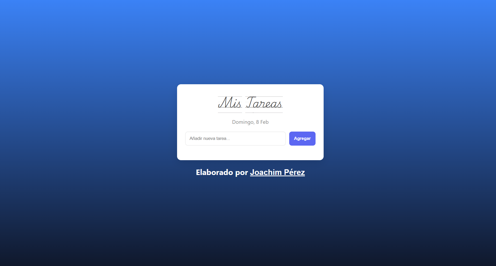

Soldaduras Zamora
Tienda en líneaAplicación de comercio electrónico con catálogo, gestión de productos y categorías, carrito y checkout de PayPal Sandbox.
EGRESADO DE EDUCACIÓN TÉCNICA
Desarrollador web · Front-end
Creo experiencias web cuidadas, funcionales y fáciles de usar. Trabajo con HTML, CSS y JavaScript, y siempre estoy aprendiendo algo nuevo.
UN POCO DE LO QUE HAGO
Aplicación de comercio electrónico con catálogo, gestión de productos y categorías, carrito y checkout de PayPal Sandbox.

Una aplicación para organizar tareas y practicar el desarrollo de interfaces interactivas.
SOBRE MÍ
Soy egresado de educación técnica y desarrollador web con interés en crear soluciones digitales útiles. Disfruto convertir ideas en páginas claras, explorar cómo funcionan las cosas y mejorar con cada proyecto.
Mi formación me enseñó a ser constante y detallista: cualidades que aplico tanto al resolver problemas como al construir cada interfaz.
Mi objetivo: seguir creciendo como desarrollador y aportar a proyectos que tengan un impacto positivo.
¿TIENES UNA IDEA O PROPUESTA?